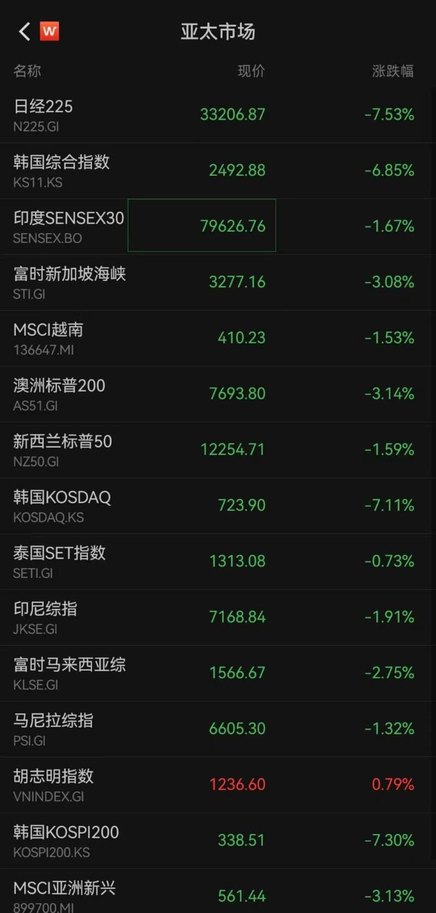
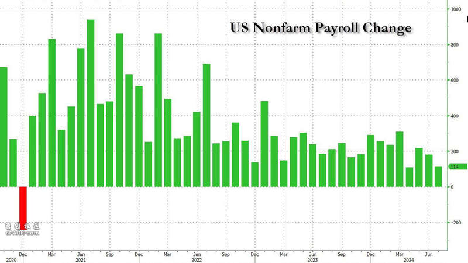
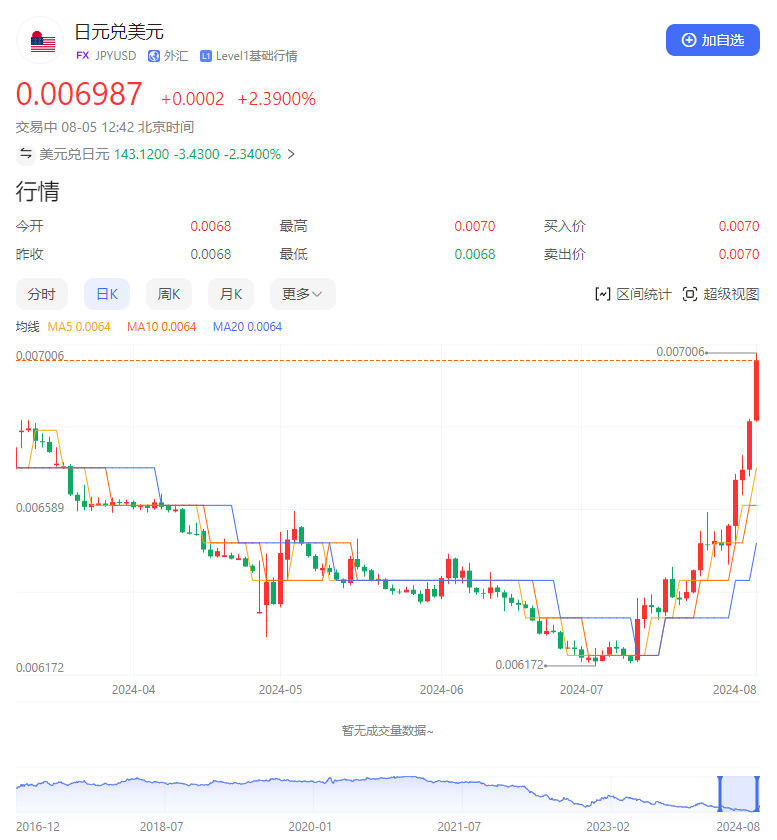
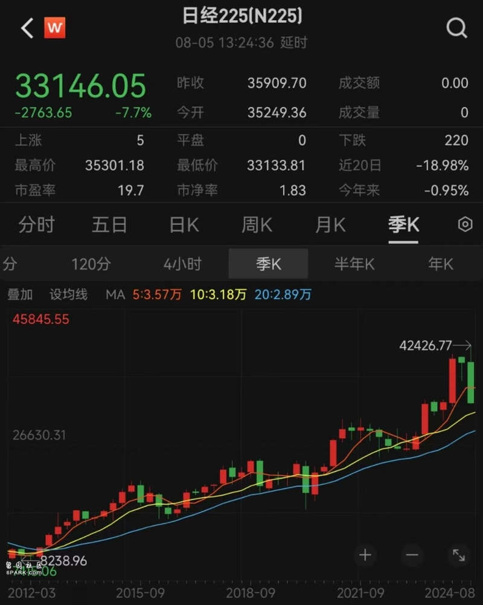
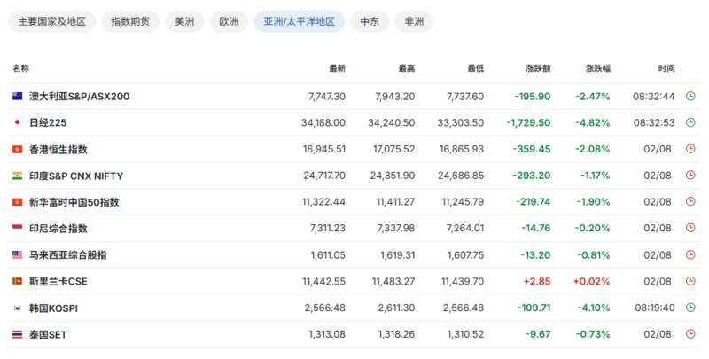
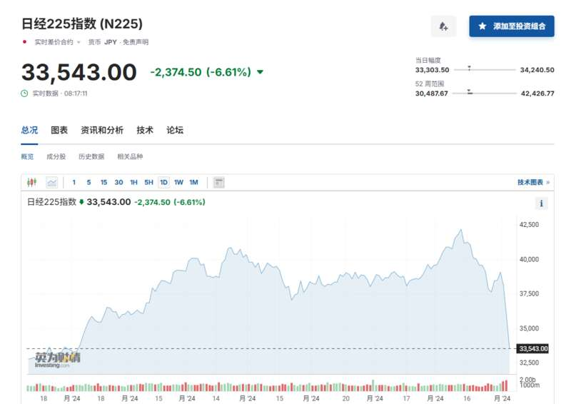
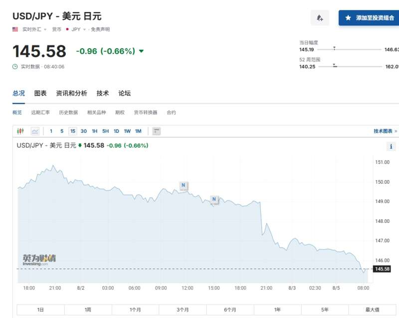
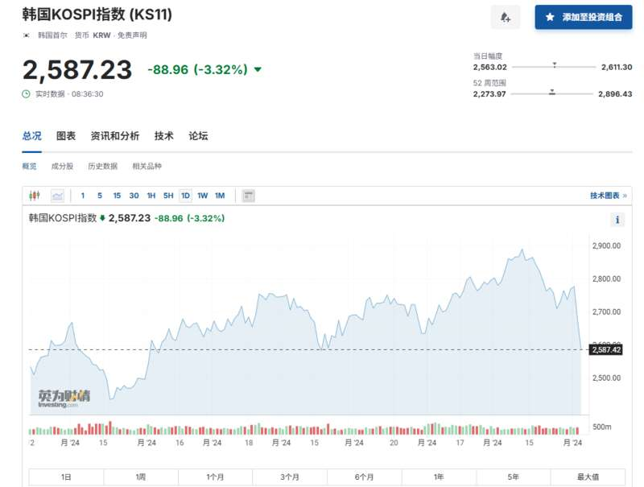
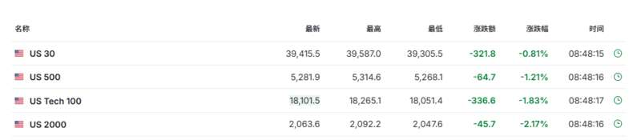

亚洲股市像极了师爷，或涨或跌、挣不挣钱总要看人家的脸色。
周一早市，受上周美国非农就业数据的打击，加剧了经济衰退担忧后的亚太股市继续下跌。

数据来源：wind
今日日股开盘，大盘指数日经225早盘跌幅超过6%，东证指数的跌幅则达到8%，直接触发熔断机制，从7月最高点下跌20%，陷入技术性熊市。
此外日本东证银行股指数跌超12%、日本10年期国债收益率下跌17个基点至4月以来最低、日本国债期货触发熔断机制、三菱日联银行日内跌幅创历史新低，连带着韩、澳等国股市也一路走低。
至午盘，日经225指数跌幅扩大至12%，日内跌近4500点。
而重挫亚洲股市的各项要素，似乎还在“发展”进程当中……
谁“空袭”了亚洲股市？
对本周亚洲股市最直接的打击，来自于美国。
上周五，美国劳工统计局发布非农就业市场报告，数据显示美国7月份的非农就业人数增加了11.4万人，远低于预期的17.5万人和6月份的20.6万人。

数据来源：美国劳工统计局
就业数据的大幅遇冷，似乎印证着联储上个月的“先见之明”，鲍威尔曾指出目前劳动力市场的风险是真实存在的，而劳动力市场的意外恶化无疑催化了降息的关键因素。
通胀风险对于联储降息的掣肘，正在越来越弱，不但9月的降息已经愈发确定，整个四季度的联储政策可能都会随劳动力市场与股市的波动而进入大幅度的连续降息之中。
美联储要降息，而日本央行却在意外加息，日本央行在7月31日结束的货币政策会议上决定，将政策利率从0%至0.1%提高至0.25%左右。这是日本央行今年3月结束负利率政策以来首次加息。
同时，日本央行继续量化紧缩，逐步减少购债规模。
一升一降之下，利差让日元兑美元汇率迅速走高，日元对美元汇率一度上升至144.96日元兑换1美元，是今年1月中旬以来最高水平。

数据来源：百度股市通
而对于出口导向的日本来说，日元的急速走强，无疑对其国内的汽车制造商、半导体设备巨头造成了巨大压力，这些占据日股半壁江山的出口商们收益表现不佳，自然重挫了东证指数在内的基准股指。
屋漏偏逢连夜雨，此前大举买入日本股市的外资们也纷纷开始套利交易和高低切换，开始选择估值更便宜的A股和港股。连续两周以来，外资持续大规模抛售日本股票，上周甚至创下一年以来最大的集体出逃规模。
此外，中东地缘政治紧张局势加剧导致能源价格上涨，又进一步恶化日本贸易收支，一前一后的夹击之下，日股开始逐渐陷入难堪的境地。
偏向虎山行：日本为何要加息？
日股的兴衰，要从2013年“安倍经济学”的推出讲起。
安倍经济学的非传统金融宽松政策，旨在央行通过大量购买民间金融机构持有的国债，以大量供应日元，从而拉动日元贬值。
对于日本来说，日元贬值能推动本国出口增长和日本企业经营业绩激增，从而使日本能够长期实现国际收支顺差。从结果来看，安倍的政策也在一定程度上减轻了日本经济衰退的程度，甚至推动日股长牛，日本资产价格显著上涨。日经225指数从2020年初的23204.9点上涨至2024年3月末的40762.7点，最终创下1989年泡沫时期创下的历史记录。

数据来源：wind
可问题在于，贬值让出口更容易，但也会进口更昂贵，而日本在能源和食品等方面高度依赖进口，通胀对于汇率的波动极为敏感。
自安倍经济学实施以来，日本消费者价格指数不断攀升，增幅远超名义工资指数。因此所谓的“工资上涨2%”的安倍经济学目标，并未给日本国民带来实际的收入增长，反而在物价的飞涨中陷入了严重的消费停滞。
凤凰网财经《财经连环话》根据统计数据发现，到2024年7月，日本通胀在6月份连续第二个月加速，CPI、核心CPI均已连续35个月同比上涨，且连续27个月达到或超过日本央行2%的目标。
此外，日本实体经济长期增长乏力、资产回报率不佳，导致资金难以流入实体经济，更多是流向股票和房地产市场，形成了日股的“虚假繁荣”。
另外，“爆买”国债的钱从哪儿来？截至2023年末，日本政府债务总额达到1286.452万亿日元，债务占GDP的比重接近260%。
日本经济团体联合会（经团联）会长十仓雅和对此表述为，“日本政府实际上是在用借款来偿还债务，这是一种类似欺诈的资金运作。”巨额财政赤字本身，就是经济增长的最大风险。
日本经济团体联合会（经团联）会长 十仓雅和
各类因素叠加之下，日本不得不选择加息、缩表以求市场的平衡。
刀尖上舞蹈：日本的“小幅”加息影响几何？
日本股市子承父业，一向受海外市场尤其美国市场影响较大，而力的作用是相互的。
颇有玄学意味的是，历史上日本的几次加息都对美股有着关键且致命的影响。第一次是2000年8月日本央行提升25个基点的决议，引发纳斯达克的崩盘；第二次则是连续两次加息带崩亚洲股市，进而引发次贷危机酿成全球性的金融灾难。
那本轮加息，是否会让全球股市重蹈覆辙呢？
总的来说，日本次轮加息对市场的影响比较有限。
2024年3月19日，日本央行议息会议正式启动货币政策正常化，正式退出负利率政策环境。
但凤凰网财经《财经连环话》发现，由于自2022年以来，日本央行就持续向市场传递退出负利率政策的可能性，市场已有充分预期，其幅度远低于美国的利率调整也被日债市场提前反应，美日利差之下，日元一直延续贬值之势，7月日元对美元汇率甚至一度跌至161.75的38年来新低，日本央行不得不多次出手干预汇市，阻止日元下跌。
加息效果的不甚理想，也使得日本央行进一步增大加息的动力。
但另一方面，加息会使得日本国债收益率出现显著攀升，大幅增加日本国债还本付息的财政压力。
同时，工资-物价上涨的良性循环可能会在过度加息中被打破，使得央行十数年摆脱“慢性通缩”的努力功亏一篑；加息带来的日元升值，也会对出口造成巨大冲击，几大因素叠加之下，日本不得不选择“必须加息”，但只能“小幅”加息的审慎路线，因此日本央行继续加息的空间实际非常有限。
但总的来说，日本汇率的“过山车”式波动反映了日本国内市场和经济发展中的长期问题，其货币政策在利率定价中的重要作用，也因为日本央行的过度干预逐渐脱敏。
未来海外市场对日本的经济与金融稳定性的影响仍会持续，但日本央行能做得，已经越来越少。
亚太市场暴跌：日股、日债触发熔断机制，进入熊市
全球经济进一步放缓的担忧令交易员惴惴不安，周一亚太股市继续下跌。

日本股市低开低走，日本东证指数、日经225指数一度跌逾6%；日本东证指数熔断机制被触发，日本国债期货触发熔断机制。

日元兑美元早盘突破146关口。

韩国股市低开逾2%，现跌超3%。三星股价跌幅扩大至5%，创2020年以来最大跌幅。

受上周五美股重挫以及巴菲特周末披露削减苹果持股近半影响，美国股指期货在早盘交易中走低，一度跌超1%。

巴菲特的抛售“将立时三刻被视为利空” Citizens JMP Securities首席执行官Mark Lehmann称，“苹果是全球消费领域的头号标的，这是关于全球消费者的宣告”。
此外，市场也在为中东紧张局势加剧料带来更大的波动做准备，局势恶化可能加剧本就预计会动荡不安的下半年。
油价在早盘交易中攀升，之前沙特提高了对亚洲的原油售价。有报道称伊朗可能打击以色列，为真主党和哈马斯官员遇刺复仇。沙特和以色列股市周日跌逾2%，超过了上周五美股跌幅。
中在疲软的美国非农就业报告加剧了经济衰退担忧后，上周五，美国三大股指全线大跌。英特尔跌26%，创下至少自1982年以来的最大跌幅，亚马逊跌8.78%，领跌道指。7月中旬以来，纳指已经连续3周大幅下跌，若从高点计算，回撤幅度超过10%
衡量债券市场波动性的一项指标已经攀升，而VIX指数 —— 华尔街的恐惧指标已跃升至近18个月来的最高水平。此外，近期美股的下跌，还由于AI变现不及预期、美股整体估值高位、财报季龙头公司业绩逊色等多重因素的影响。
“未来几个月，全球和澳大利亚股市可能进一步下跌，这表明现在逢低买入还为时过早” ，AMP Ltd.首席经济学家兼投资策略主管Shane Oliver指出回调正在进行中。